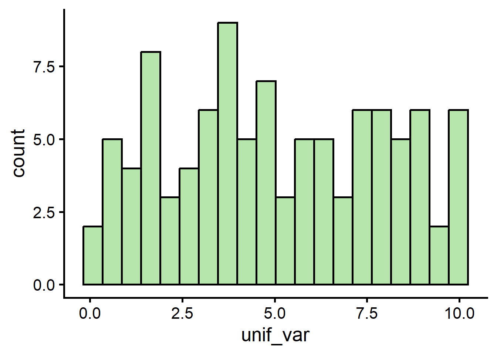
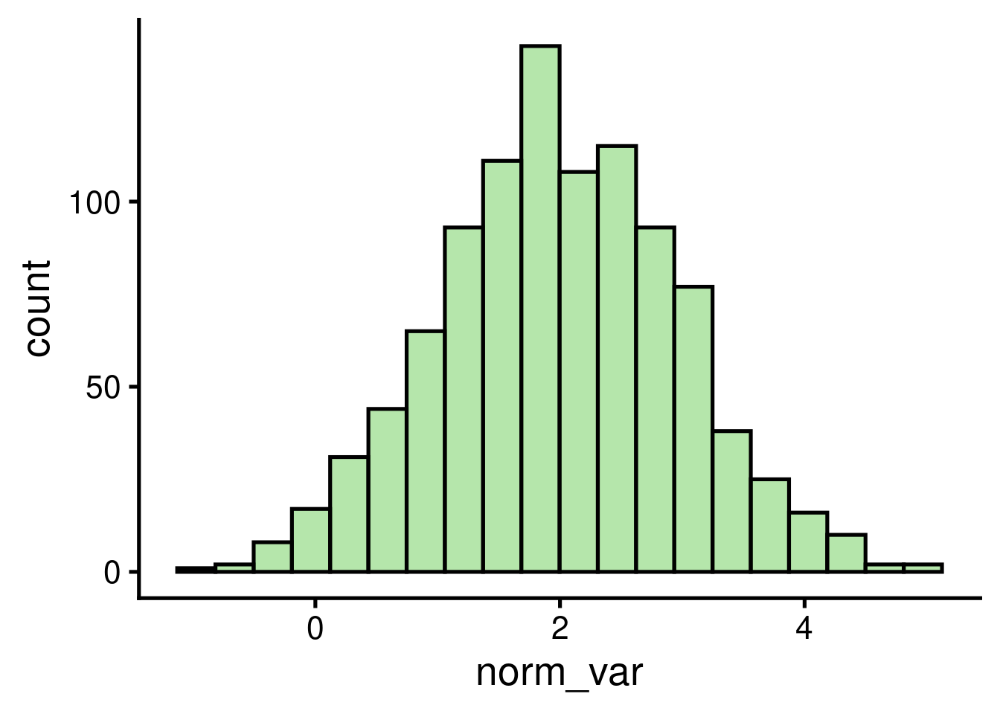
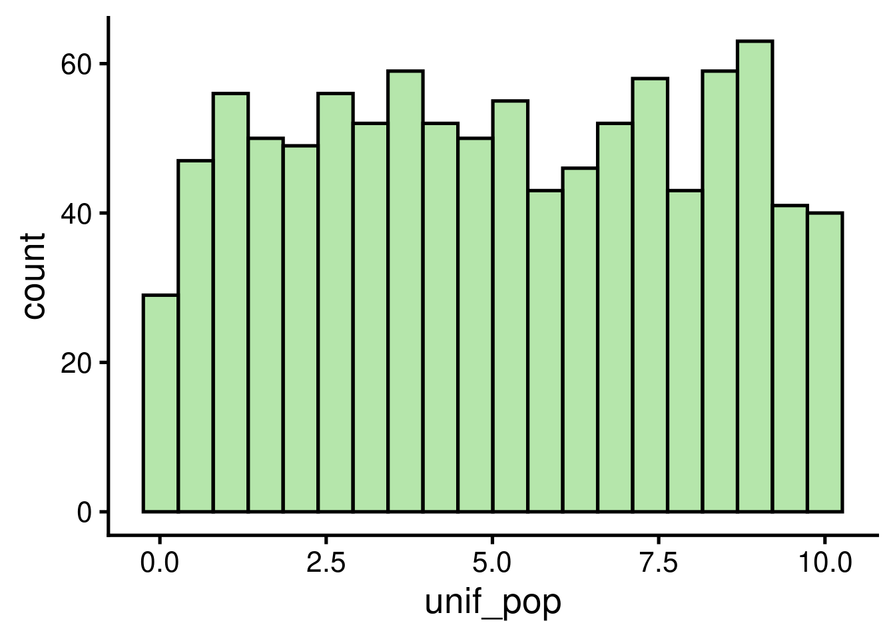
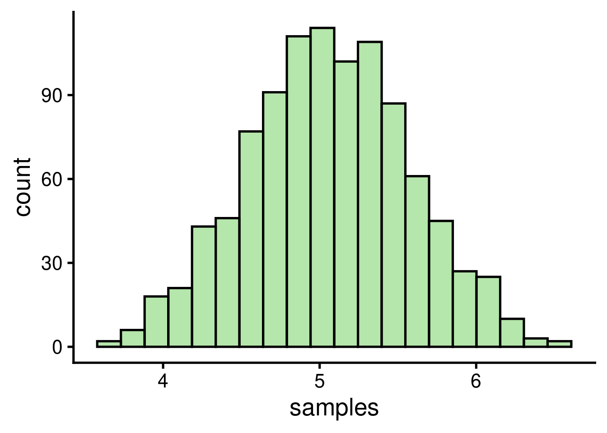
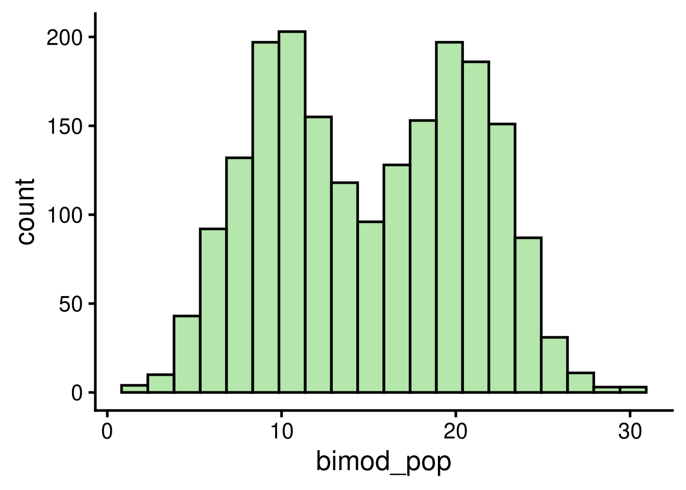
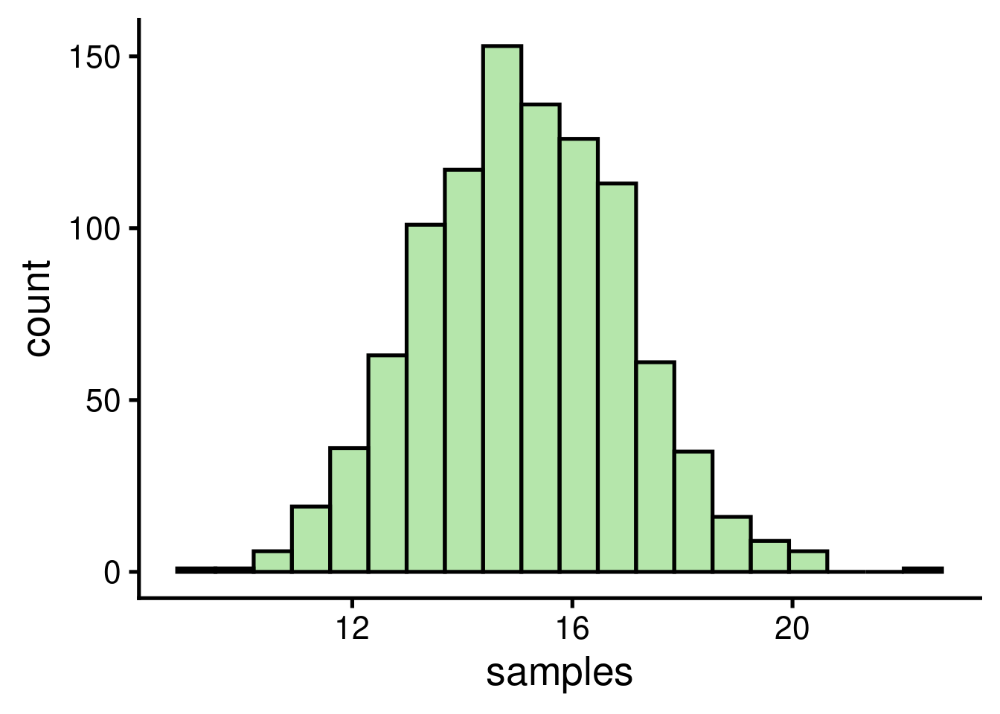
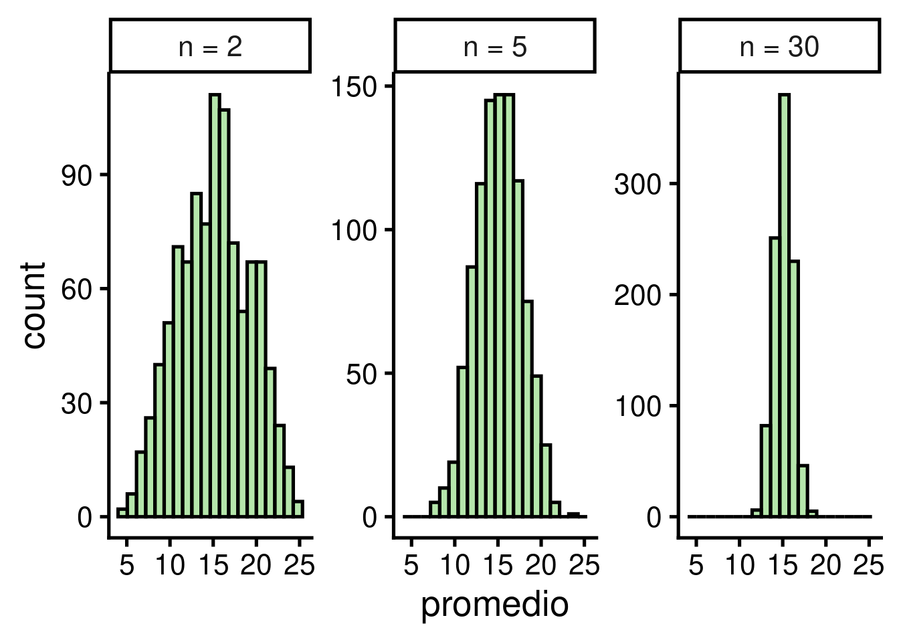

Código
# instalar/cargar paquetes
sketchy::load_packages(
c("ggplot2",
"viridis"
)
)4 de octubre de 2026
Aprender las principales herramientas de simulación de datos en R
Comprender la utilidad de usar datos simulados para entender el comportamiento de las herramientas estadísticas
Paquetes a utilizar en este manual:
La estadística nos permite inferir patrones en los datos. Solemos utilizar conjuntos de datos reales para enseñar estadística. Sin embargo, puede ser circular entender el funcionamiento interno de una herramienta estadística probando su capacidad para inferir un patrón que no estamos seguros de encontrar en los datos (y no tenemos idea del mecanismo que produjo ese patrón). Las simulaciones nos permiten crear escenarios controlados en los que conocemos con seguridad los patrones presentes en los datos y los procesos subyacentes que los han generado.
R ofrece algunas funciones básicas para la simulación de datos. Las más utilizadas son las funciones generadoras de números aleatorios. Los nombres de estas funciones comienzan con r (r____()). Por ejemplo, runif():
El resultado es un vector numérico de longitud 100 (n = 100):
[1] 9.889093 3.977455 1.156978 0.697487 2.437494 7.920104 3.400624 9.720625
[9] 1.658555 4.591037 1.717481 2.314771 7.728119 0.963015 4.534478 0.847007
[17] 5.606659 0.087046 9.857371 3.165848 6.394489 2.952232 9.967037 9.060213
[25] 9.887391 0.656457 6.270388 4.904750 9.710244 3.622208 6.799935 2.637199
[33] 1.857143 1.851432 3.792967 8.470244 4.980761 7.905856 8.384639 4.569039
[41] 7.994758 3.819431 7.597012 4.367756 9.042177 3.195349 0.825691 8.162891
[49] 8.984762 9.664964 5.730689 7.200795 7.740586 6.277608 7.229893 3.868313
[57] 1.627908 1.872283 3.912495 2.739012 1.919177 5.043918 7.638404 6.936689
[65] 5.440542 6.590872 4.687284 4.818055 3.370636 4.245263 2.870151 6.011915
[73] 8.407423 6.208370 1.345516 5.677224 4.434263 4.379754 6.236172 9.326533
[81] 8.884926 8.785406 2.421769 7.414538 3.876563 0.789517 0.948356 7.621427
[89] 3.478940 4.167667 3.440162 0.084109 9.115750 1.822054 7.228034 5.719633
[97] 5.400364 3.549474 8.240918 1.861368
Podemos explorar el resultado graficando un histograma:

Muestra una distribución uniforme que va de 0 a 10.
También podemos simular números aleatorios procedentes de una distribución normal utilizando rnorm():

Tenga en cuenta que todas las funciones generadoras de números aleatorios tienen el argumento ‘n’, que determina la longitud del vector generado (es decir, el número de números aleatorios), además de algunos argumentos adicionales relacionados con parámetros específicos de la distribución.
Las variables continuas (es decir, los vectores numéricos) pueden convertirse en variables discretas (es decir, números enteros) simplemente redondeándolas:
[1] 15.4269 8.5450 15.1387 8.9203 9.3693[1] 15 9 15 9 9
Ejercicio 1
¿Qué hacen las funciones rbinom() y rexp()?
Ejecútela y haga histogramas de sus resultados
¿Qué hacen los argumentos ‘mean’ y ‘sd’ en rnorm()? Juegue con diferentes valores y compruebe el histograma para hacerse una idea de su efecto en la simulación
La forma más sencilla de generar variables categóricas es utilizar el vector de ejemplo letters (o LETTERS) para asignar niveles de categoría. Podemos hacerlo utilizando la función rep(). Por ejemplo, el siguiente código crea un vector categórico (caracteres) con dos niveles, cada uno con 4 observaciones:
[1] "bajo" "bajo" "bajo" "bajo" "medio" "medio" "medio" "medio" "alto"
[10] "alto" "alto" "alto"
También podemos replicar este patrón utilizando el argumento ‘times’. Este código replica el vector anterior 2 veces:
[1] "a" "a" "a" "a" "b" "b" "b" "b" "a" "a" "a" "a" "b" "b" "b" "b"
Otra opción es simular una variable numérica y luego convertirla en un factor:
[1] 0 1 0 1 1 1 1 0 1 0 [1] a b a b b b b a b a
Levels: a b
La otra herramienta importante de R para jugar con datos simulados es sample(). Esta función permite tomar muestras de tamaños específicos de vectores. Por ejemplo, tomemos el ejemplo del vector ‘letters’:
[1] "a" "b" "c" "d" "e" "f" "g" "h" "i" "j" "k" "l" "m" "n" "o" "p" "q" "r" "s"
[20] "t" "u" "v" "w" "x" "y" "z"
Podemos tomar una muestra de este vector como es:
El argumento ‘size’ nos permite determinar el tamaño de la muestra. Tenga en cuenta que obtendremos un error si el tamaño es mayor que el propio vector:
Error in `sample.int()`:
! cannot take a sample larger than the population when 'replace = FALSE'
Esto sólo puede hacerse cuando el muestreo es con reemplazo (replacement). El muestreo con reemplazo puede aplicarse estableciendo el argumento replace = TRUE:
[1] "k" "v" "l" "f" "p" "p" "o" "p" "d" "x" "v" "i" "e" "z" "r" "a" "y" "v" "d"
[20] "f" "j" "v" "d" "o" "i" "r" "q" "a" "c" "x"
A menudo, las simulaciones deben repetirse varias veces para descartar resultados espurios debidos al azar o simplemente para probar diferentes parámetros. Las funciones de simulación de datos mencionadas anteriormente pueden ejecutarse varias veces (por ejemplo, iteradas) utilizando la función replicate():
[1] "list"[[1]]
[1] 1.34285 0.90854
[[2]]
[1] 0.46993 -0.58965
[[3]]
[1] -0.75787 -0.93300
El último truco que necesitamos para ejecutar simulaciones en R es la capacidad de reproducir una simulación (es decir, obtener exactamente los mismos datos y resultados simulados). Esto puede ser útil para que otros investigadores puedan ejecutar nuestros análisis exactamente de la misma manera. Esto puede hacerse fácilmente con la función set.seed(). Pruebe a ejecutar el siguiente código. Debería obtener la misma salida en ambas llamadas (y la misma que se muestra aquí):
[1] 0.50748 0.30677[1] 0.50748 0.30677Ahora que sabemos cómo simular variables continuas y categóricas, podemos juntarlas para crear conjuntos de datos simulados. Esto se puede hacer utilizando la función data.frame():
| grupo | tamano |
|---|---|
| a | 4.8158 |
| a | 3.6287 |
| a | 4.4008 |
| b | 5.2946 |
| b | 5.3898 |
| b | 3.7919 |
Por supuesto, podríamos añadir más variables a este juego de datos:
| grupo | individuo | tamano | peso |
|---|---|---|---|
| a | A | 4.6363 | 109.874 |
| a | B | 3.3733 | 107.414 |
| a | C | 4.7435 | 100.893 |
| b | D | 6.1018 | 90.451 |
| b | E | 5.7558 | 98.049 |
| b | F | 4.7618 | 109.255 |
Y eso es un juego de datos simulados en su forma más básica. Se parece mucho al tipo de datos con los que trabajamos en biología.
El Teorema del Límite Central afirma que, si tomamos muestras aleatorias de una población (con varianza finita), los promedios de esas muestras seguirán aproximadamente una distribución normal, aunque la población no esté distribuida normalmente. Esta aproximación mejora conforme aumenta el tamaño de cada muestra. Además, la desviación estándar de esa distribución de promedios (el error estándar) es igual a la desviación estándar de la población dividida entre la raíz cuadrada del tamaño de muestra (\(\sigma / \sqrt{n}\)). Por otro lado, el promedio de esa distribución de promedios es igual al promedio de la población (es decir, el promedio muestral es un estimador insesgado). El teorema es un concepto clave para la estadística inferencial, ya que implica que los métodos estadísticos que funcionan para las distribuciones normales pueden ser aplicables a muchos problemas que implican otros tipos de distribuciones. No obstante, el objetivo aquí es sólo mostrar cómo se pueden utilizar las simulaciones para entender el comportamiento de los métodos estadísticos.
Para comprobar si esas afirmaciones básicas sobre el Teorema del Límite Central son ciertas, podemos utilizar datos simulados en R. Vamos a simular una población de 1000 observaciones con una distribución uniforme:

Podemos tomar muestras aleatorias usando sample() así:
[1] 9.28420 1.02626 2.57517 3.32485 6.89990 2.29404 0.33737 8.21366 3.30364
[10] 8.03793 2.59174 7.81770 5.65426 0.63831 2.83470 4.20434 4.76330 4.42193
[19] 6.97830 7.92625 0.68121 3.52323 6.51103 5.38289 7.97210 1.80062 4.21282
[28] 3.33866 8.91223 4.71163
Este proceso puede ser replicado varias veces con replicate():
El código anterior toma 1000 muestras con 30 valores cada una y calcula el promedio de cada una. Ahora podemos comprobar la distribución de los promedios de las muestras:

… así como su promedio:
Como era de esperar, los promedios de las muestras siguen una distribución aproximadamente normal con un promedio muy cercano al promedio de la población, que es:
También podemos comprobar que la desviación estándar de los promedios (el error estándar) es cercana a la predicha por el teorema (\(\sigma / \sqrt{n}\)):
[1] 0.519[1] 0.5331
Probemos con una distribución más compleja. Por ejemplo, una distribución bimodal:


El teorema dice que la aproximación a la normal mejora conforme aumenta el tamaño de cada muestra. Podemos comprobarlo repitiendo el muestreo con diferentes tamaños de muestra:
# tamanos de muestra a evaluar
tamanos <- c(2, 5, 30)
# replicar muestreo para cada tamano de muestra
prom_tamanos <- lapply(tamanos, function(x) {
data.frame(tamano = paste("n =", x),
promedio = replicate(1000, mean(sample(bimod_pop, x))))
})
# juntar en un solo data frame
prom_tamanos <- do.call(rbind, prom_tamanos)
# ordenar niveles para graficar
prom_tamanos$tamano <- factor(prom_tamanos$tamano, levels = paste("n =", tamanos))
# graficar
ggplot(data = prom_tamanos, mapping = aes(x = promedio)) +
geom_histogram() +
facet_wrap(~ tamano, scales = "free_y")
Con muestras muy pequeñas (n = 2) la distribución de los promedios todavía refleja la forma de la población, mientras que con n = 30 ya es prácticamente normal (y más estrecha).
Ejercicio 2
Intente explorar el Teorema del Límite Central como en el caso anterior, pero esta vez utilizando:
rexp())rlnorm())
─ Session info ───────────────────────────────────────────────────────────────
setting value
version R version 4.5.2 (2025-10-31)
os Ubuntu 22.04.4 LTS
system x86_64, linux-gnu
ui X11
language (EN)
collate en_US.UTF-8
ctype en_US.UTF-8
tz America/Costa_Rica
date 2026-10-04
pandoc 3.8.3 @ /usr/lib/rstudio/resources/app/bin/quarto/bin/tools/x86_64/ (via rmarkdown)
quarto 1.9.38 @ /usr/lib/rstudio/resources/app/bin/quarto/bin/quarto
─ Packages ───────────────────────────────────────────────────────────────────
package * version date (UTC) lib source
cachem 1.1.0 2024-05-16 [1] CRAN (R 4.5.2)
cli 3.6.6 2026-04-09 [1] CRAN (R 4.5.2)
crayon 1.5.3 2024-06-20 [1] CRAN (R 4.5.2)
devtools 2.4.6 2025-10-03 [1] CRAN (R 4.5.2)
digest 0.6.39 2025-11-19 [1] CRAN (R 4.5.2)
dplyr 1.2.1 2026-04-03 [1] CRAN (R 4.5.2)
ellipsis 0.3.2 2021-04-29 [3] CRAN (R 4.1.1)
evaluate 1.0.5 2025-08-27 [1] CRAN (R 4.5.2)
farver 2.1.2 2024-05-13 [1] CRAN (R 4.5.2)
fastmap 1.2.0 2024-05-15 [1] CRAN (R 4.5.2)
fs 2.1.0 2026-04-18 [1] CRAN (R 4.5.2)
generics 0.1.4 2025-05-09 [1] CRAN (R 4.5.2)
ggplot2 * 4.0.3 2026-04-22 [1] CRAN (R 4.5.2)
glue 1.8.1 2026-04-17 [1] CRAN (R 4.5.2)
gridExtra 2.3.1 2026-06-25 [1] CRAN (R 4.5.2)
gtable 0.3.6 2024-10-25 [1] CRAN (R 4.5.2)
htmltools 0.5.9 2025-12-04 [1] CRAN (R 4.5.2)
htmlwidgets 1.6.4 2023-12-06 [1] CRAN (R 4.5.2)
jsonlite 2.0.0 2025-03-27 [1] CRAN (R 4.5.2)
knitr * 1.52 2026-09-06 [1] CRAN (R 4.5.2)
labeling 0.4.3 2023-08-29 [1] CRAN (R 4.5.2)
lifecycle 1.0.5 2026-01-08 [1] CRAN (R 4.5.2)
magrittr 2.0.5 2026-04-04 [1] CRAN (R 4.5.2)
memoise 2.0.1 2021-11-26 [3] CRAN (R 4.1.2)
otel 0.2.0 2025-08-29 [1] CRAN (R 4.5.2)
packrat 0.9.3 2025-06-16 [1] CRAN (R 4.5.2)
pillar 1.11.1 2025-09-17 [1] CRAN (R 4.5.2)
pkgbuild 1.4.8 2025-05-26 [1] CRAN (R 4.5.2)
pkgconfig 2.0.3 2019-09-22 [3] CRAN (R 4.0.1)
pkgload 1.5.3 2026-06-15 [1] CRAN (R 4.5.2)
purrr 1.2.2 2026-04-10 [1] CRAN (R 4.5.2)
R6 2.6.1 2025-02-15 [1] CRAN (R 4.5.2)
RColorBrewer 1.1-3 2022-04-03 [1] CRAN (R 4.5.2)
remotes 2.5.0 2024-03-17 [1] CRAN (R 4.5.2)
rlang 1.3.0 2026-07-05 [1] CRAN (R 4.5.2)
rmarkdown 2.31 2026-03-26 [1] CRAN (R 4.5.2)
rstudioapi 0.18.0 2026-01-16 [1] CRAN (R 4.5.2)
S7 0.2.2 2026-04-22 [1] CRAN (R 4.5.2)
scales 1.4.0 2025-04-24 [1] CRAN (R 4.5.2)
sessioninfo 1.2.3 2025-02-05 [1] CRAN (R 4.5.2)
sketchy 1.0.7 2026-03-03 [1] CRANs (R 4.5.2)
stringi 1.8.9 2026-08-04 [1] CRAN (R 4.5.2)
stringr 1.6.0 2025-11-04 [1] CRAN (R 4.5.2)
tibble 3.3.1 2026-01-11 [1] CRAN (R 4.5.2)
tidyselect 1.2.1 2024-03-11 [1] CRAN (R 4.5.2)
usethis 3.2.1 2025-09-06 [1] CRAN (R 4.5.2)
vctrs 0.7.3 2026-04-11 [1] CRAN (R 4.5.2)
viridis * 0.6.5 2024-01-29 [1] CRAN (R 4.5.2)
viridisLite * 0.4.3 2026-02-04 [1] CRAN (R 4.5.2)
withr 3.0.3 2026-06-19 [1] CRAN (R 4.5.2)
xaringanExtra 0.8.0 2024-05-19 [1] CRAN (R 4.5.2)
xfun 0.61 2026-09-16 [1] CRAN (R 4.5.2)
yaml 2.3.12 2025-12-10 [1] CRAN (R 4.5.2)
[1] /home/m/R/x86_64-pc-linux-gnu-library/4.5
[2] /usr/local/lib/R/site-library
[3] /usr/lib/R/site-library
[4] /usr/lib/R/library
* ── Packages attached to the search path.
──────────────────────────────────────────────────────────────────────────────---
title: <font size="7"><b>Simulación de datos</b></font>
---
```{r,echo=FALSE,message=FALSE}
options("digits"=5)
options("digits.secs"=3)
```
```{r, echo = FALSE, message=FALSE}
library(knitr)
library(ggplot2)
library(viridis)
# ggplot settings
geom_histogram <- function(...) ggplot2::geom_histogram(..., fill = viridis(10, alpha = 0.5)[8], show.legend = FALSE, bins = 20, color = "black")
geom_smooth <- function(...) ggplot2::geom_smooth(..., color = viridis(10, alpha = 0.5)[8])
geom_boxplot <- function(...) ggplot2::geom_boxplot(..., fill = viridis(10, alpha = 0.5)[7])
geom_pointrange <- function(...) ggplot2::geom_pointrange(..., show.legend = FALSE, color = viridis(10, alpha = 0.5)[7], size = 2)
theme_set(theme_classic(base_size = 20))
```
::: {.alert .alert-info}
# Objetivo del manual {.unnumbered .unlisted}
- Aprender las principales herramientas de simulación de datos en R
- Comprender la utilidad de usar datos simulados para entender el comportamiento de las herramientas estadísticas
:::
------------------------------------------------------------------------
Paquetes a utilizar en este manual:
```{r}
# instalar/cargar paquetes
sketchy::load_packages(
c("ggplot2",
"viridis"
)
)
```
------------------------------------------------------------------------
# Cómo simular datos
## Generación de números aleatorios en R
La estadística nos permite inferir patrones en los datos. Solemos utilizar conjuntos de datos reales para enseñar estadística. Sin embargo, puede ser circular entender el funcionamiento interno de una herramienta estadística probando su capacidad para inferir un patrón que no estamos seguros de encontrar en los datos (y no tenemos idea del mecanismo que produjo ese patrón). **Las simulaciones nos permiten crear escenarios controlados en los que conocemos con seguridad los patrones** presentes en los datos y los procesos subyacentes que los han generado.
R ofrece algunas funciones básicas para la simulación de datos. Las más utilizadas son las funciones generadoras de números aleatorios. Los nombres de estas funciones comienzan con *r* (`r____()`). Por ejemplo, `runif()`:
```{r, echo=FALSE}
set.seed(7)
```
```{r}
# simular variable uniforme
unif_var <- runif(n = 100, min = 0, max = 10)
```
El resultado es un vector numérico de longitud 100 (`n = 100`):
```{r}
# imprimir variable
unif_var
```
Podemos explorar el resultado graficando un histograma:
```{r}
# crear histograma
ggplot(data = data.frame(unif_var), mapping = aes(x = unif_var)) + geom_histogram()
```
Muestra una distribución uniforme que va de 0 a 10.
También podemos simular números aleatorios procedentes de una distribución normal utilizando `rnorm()`:
```{r}
# crear una variable normal
norm_var <- rnorm(n = 1000, mean = 2, sd = 1)
# graficar histograma
ggplot(data = data.frame(norm_var), mapping = aes(x = norm_var)) + geom_histogram()
```
Tenga en cuenta que todas las funciones generadoras de números aleatorios tienen el argumento 'n', que determina la longitud del vector generado (es decir, el número de números aleatorios), además de algunos argumentos adicionales relacionados con parámetros específicos de la distribución.
Las variables continuas (es decir, los vectores numéricos) pueden convertirse en variables discretas (es decir, números enteros) simplemente redondeándolas:
```{r}
v1 <- rnorm(n = 5, mean = 10, sd = 3)
v1
round(x = v1, digits = 0)
```
::: {.alert .alert-info}
<font size="5">Ejercicio 1</font>
- ¿Qué hacen las funciones `rbinom()` y `rexp()`?
- Ejecútela y haga histogramas de sus resultados
- ¿Qué hacen los argumentos 'mean' y 'sd' en `rnorm()`? Juegue con diferentes valores y compruebe el histograma para hacerse una idea de su efecto en la simulación
:::
## Generación de variables categóricas
La forma más sencilla de generar variables categóricas es utilizar el vector de ejemplo `letters` (o `LETTERS`) para asignar niveles de categoría. Podemos hacerlo utilizando la función `rep()`. Por ejemplo, el siguiente código crea un vector categórico (caracteres) con dos niveles, cada uno con 4 observaciones:
```{r}
rep(letters[1:2], each = 4)
```
```{r}
rep(c("bajo", "medio", "alto"), each = 4)
```
También podemos replicar este patrón utilizando el argumento 'times'. Este código replica el vector anterior 2 veces:
```{r}
rep(letters[1:2], each = 4, times = 2)
```
Otra opción es simular una variable numérica y luego convertirla en un factor:
```{r}
# variable binaria
binar_var <- sample(c(0, 1), 10,replace = TRUE)
binar_var
```
```{r}
# convertir a factor
categ_var <- factor(binar_var, labels = c("a", "b"))
categ_var
```
## Muestreo aleatorio
La otra herramienta importante de R para jugar con datos simulados es `sample()`. Esta función permite tomar muestras de tamaños específicos de vectores. Por ejemplo, tomemos el ejemplo del vector 'letters':
```{r}
letters
```
Podemos tomar una muestra de este vector como es:
```{r}
# tomar muestra
sample(x = letters, size = 10)
```
El argumento 'size' nos permite determinar el tamaño de la muestra. Tenga en cuenta que obtendremos un error si el tamaño es mayor que el propio vector:
```{r, error=TRUE}
sample(x = letters, size = 30)
```
Esto sólo puede hacerse cuando el muestreo es con reemplazo (replacement). El muestreo con reemplazo puede aplicarse estableciendo el argumento `replace = TRUE`:
```{r}
sample(x = letters, size = 30, replace = TRUE)
```
## Iterar un proceso
A menudo, las simulaciones deben repetirse varias veces para descartar resultados espurios debidos al azar o simplemente para probar diferentes parámetros. Las funciones de simulación de datos mencionadas anteriormente pueden ejecutarse varias veces (por ejemplo, iteradas) utilizando la función `replicate()`:
```{r}
# replicar
repl_rnorm <- replicate(n = 3, expr = rnorm(2), simplify = FALSE)
# ver clase
class(repl_rnorm)
# imprimir
repl_rnorm
```
## Hacer que las simulaciones sean reproducibles
El último truco que necesitamos para ejecutar simulaciones en R es la capacidad de reproducir una simulación (es decir, obtener exactamente los mismos datos y resultados simulados). Esto puede ser útil para que otros investigadores puedan ejecutar nuestros análisis exactamente de la misma manera. Esto puede hacerse fácilmente con la función `set.seed()`. Pruebe a ejecutar el siguiente código. Debería obtener la misma salida en ambas llamadas (y la misma que se muestra aquí):
```{r}
# definir semilla
set.seed(10)
# crear variable uniforme
runif(n = 2)
# definir la misma semilla otra vez
set.seed(10)
# se obtienen exactamente los mismos valores
runif(n = 2)
```
------------------------------------------------------------------------
# Crear juegos de datos
## Juegos de datos con variables numéricas y categóricas
Ahora que sabemos cómo simular variables continuas y categóricas, podemos juntarlas para crear conjuntos de datos simulados. Esto se puede hacer utilizando la función `data.frame()`:
```{r}
# crear variable categorica
grupo <- rep(letters[1:2], each = 3)
# crear variable continua
tamano <- rnorm(n = 6, mean = 5, sd = 1)
# poner juntas en un data frame
df <- data.frame(grupo, tamano)
# imprimir
df
```
Por supuesto, podríamos añadir más variables a este juego de datos:
```{r}
# crear variable categorica
grupo <- rep(letters[1:2], each = 3)
individuo <- LETTERS[1:6]
# crear variables continuas
tamano <- rnorm(n = 6, mean = 5, sd = 1)
peso <- rnorm(n = 6, mean = 100, sd = 10)
# poner todo en un data frame
df <- data.frame(grupo, individuo, tamano, peso)
# imprimir
df
```
Y eso es un juego de datos simulados en su forma más básica. Se parece mucho al tipo de datos con los que trabajamos en biología.
------------------------------------------------------------------------
# Cómo utilizar datos simulados para entender el comportamiento de las herramientas estadísticas
## Prueba de concepto: *el Teorema del Límite Central*
El [Teorema del Límite Central](https://en.wikipedia.org/wiki/Central_limit_theorem) afirma que, si tomamos muestras aleatorias de una población (con varianza finita), los promedios de esas muestras seguirán *aproximadamente* una distribución normal, aunque la población no esté distribuida normalmente. Esta aproximación mejora conforme aumenta el tamaño de cada muestra. Además, la desviación estándar de esa distribución de promedios (el **error estándar**) es igual a la desviación estándar de la población dividida entre la raíz cuadrada del tamaño de muestra ($\sigma / \sqrt{n}$). Por otro lado, el promedio de esa distribución de promedios es igual al promedio de la población (es decir, el promedio muestral es un estimador insesgado). El teorema es un concepto clave para la estadística inferencial, ya que implica que los métodos estadísticos que funcionan para las distribuciones normales pueden ser aplicables a muchos problemas que implican otros tipos de distribuciones. No obstante, el objetivo aquí es sólo mostrar cómo se pueden utilizar las simulaciones para entender el comportamiento de los métodos estadísticos.
Para comprobar si esas afirmaciones básicas sobre el Teorema del Límite Central son ciertas, podemos utilizar datos simulados en R. Vamos a simular una población de 1000 observaciones con una distribución uniforme:
```{r}
# definir semilla
set.seed(10)
# simular poblacion uniforme
unif_pop <- runif(1000, min = 0, max = 10)
# ver histograma
ggplot(data = data.frame(unif_pop), mapping = aes(x = unif_pop)) + geom_histogram()
```
Podemos tomar muestras aleatorias usando `sample()` así:
```{r}
sample(x = unif_pop, size = 30)
```
Este proceso puede ser replicado varias veces con `replicate()`:
```{r}
# replicar
samples <- replicate(n = 1000, expr = mean(sample(x = unif_pop, size = 30)))
```
El código anterior toma 1000 muestras con 30 valores cada una y calcula el promedio de cada una. Ahora podemos comprobar la distribución de los promedios de las muestras:
```{r}
# ver distribucion/ histograma
ggplot(data = data.frame(samples), mapping = aes(x = samples)) + geom_histogram()
```
... así como su promedio:
```{r}
mean(samples)
```
Como era de esperar, los promedios de las muestras siguen una distribución aproximadamente normal con un promedio muy cercano al promedio de la población, que es:
```{r}
mean(unif_pop)
```
También podemos comprobar que la desviación estándar de los promedios (el error estándar) es cercana a la predicha por el teorema ($\sigma / \sqrt{n}$):
```{r}
# desviacion estandar de los promedios
sd(samples)
# valor esperado segun el teorema
sd(unif_pop) / sqrt(30)
```
Probemos con una distribución más compleja. Por ejemplo, una distribución bimodal:
```{r}
# usar semilla
set.seed(123)
# simular variables
norm1 <- rnorm(n = 1000, mean = 10, sd = 3)
norm2 <- rnorm(n = 1000, mean = 20, sd = 3)
# juntar en una sola variable
bimod_pop <- c(norm1, norm2)
# ver histograma
ggplot(data = data.frame(bimod_pop), mapping = aes(x = bimod_pop)) + geom_histogram()
```
```{r}
# replicar muestreo
samples <- replicate(1000, mean(sample(bimod_pop, 10)))
# ver histograma
ggplot(data = data.frame(samples), mapping = aes(x = samples)) + geom_histogram()
```
```{r}
# ver promedios
mean(samples)
mean(bimod_pop)
```
El teorema dice que la aproximación a la normal mejora conforme aumenta el tamaño de cada muestra. Podemos comprobarlo repitiendo el muestreo con diferentes tamaños de muestra:
```{r, out.width = "100%"}
# tamanos de muestra a evaluar
tamanos <- c(2, 5, 30)
# replicar muestreo para cada tamano de muestra
prom_tamanos <- lapply(tamanos, function(x) {
data.frame(tamano = paste("n =", x),
promedio = replicate(1000, mean(sample(bimod_pop, x))))
})
# juntar en un solo data frame
prom_tamanos <- do.call(rbind, prom_tamanos)
# ordenar niveles para graficar
prom_tamanos$tamano <- factor(prom_tamanos$tamano, levels = paste("n =", tamanos))
# graficar
ggplot(data = prom_tamanos, mapping = aes(x = promedio)) +
geom_histogram() +
facet_wrap(~ tamano, scales = "free_y")
```
Con muestras muy pequeñas (n = 2) la distribución de los promedios todavía refleja la forma de la población, mientras que con n = 30 ya es prácticamente normal (y más estrecha).
::: {.alert .alert-info}
<font size="5">Ejercicio 2</font>
- Intente explorar el Teorema del Límite Central como en el caso anterior, pero esta vez utilizando:
1. Una distribución exponencial (`rexp()`)
2. Una distribución log-normal (`rlnorm()`)
- Para cada distribución: grafique un histograma y compare los promedios de la población y de las muestras
:::
## Referencias
- [R's rbinom -- Simulate Binomial or Bernoulli trials](https://www.programmingr.com/examples/neat-tricks/sample-r-function/r-rbinom/)
- [R's rnorm -- selecting values from a normal distribution](https://www.programmingr.com/examples/neat-tricks/sample-r-function/r-rnorm/)
- [R's exp -- Simulating Exponential Distributions](https://www.programmingr.com/examples/neat-tricks/sample-r-function/rexp/)
- [Simulating data in R](https://aosmith.rbind.io/2018/08/29/getting-started-simulating-data/)
------------------------------------------------------------------------
::: {.callout-note collapse="true"}
## Información de la sesión {.unnumbered .unlisted}
```{r session info}
#| echo: false
# if devtools is installed use devtools::session_info()
if (requireNamespace("devtools", quietly = TRUE)) {
devtools::session_info()
} else {
sessionInfo()
}
```
:::